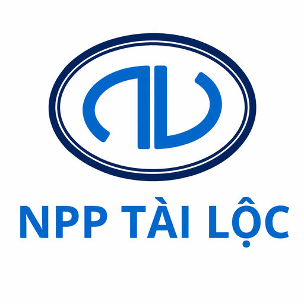

App NPP Tài Lộc
Công cụ dành cho nhân viên NPP Tài Lộc được cấp quyền xử lý DMS trên Android. Trang chủ chọn nhà cung cấp; hiện hỗ trợ VNM DMS, các NCC khác chưa tích hợp. Điện thoại duyệt đơn, giao nhận, hủy hàng, kiểm kho và chốt ngày; PC in và phục vụ các phần hành tiếp theo.
Bản0.4.0 cần tài khoản App NPP, địa chỉ server HTTPS của công ty và tài khoản DMS riêng cho kênh VNM. Máy server phải chạy để App kiểm quyền. Đây là công cụ của NPP, không phải ứng dụng chính thức do Vinamilk phát hành.
Liên hệ: quocphuoc88@gmail.com
Chính sách bảo mật
Không gửi mật khẩu, phiên đăng nhập hoặc chứng từ đầy đủ qua bình luận/kênh công khai.